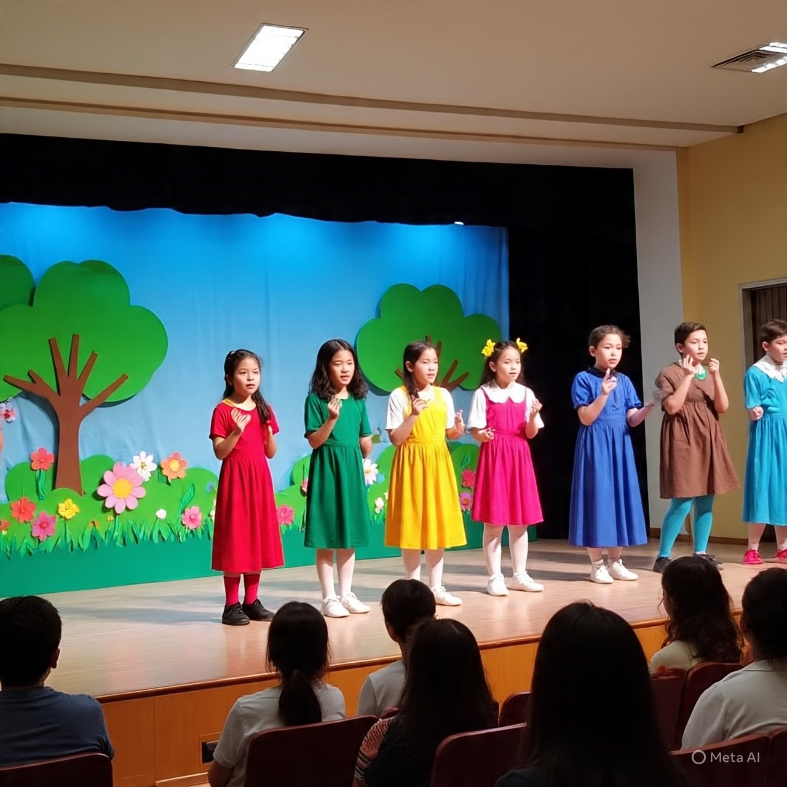
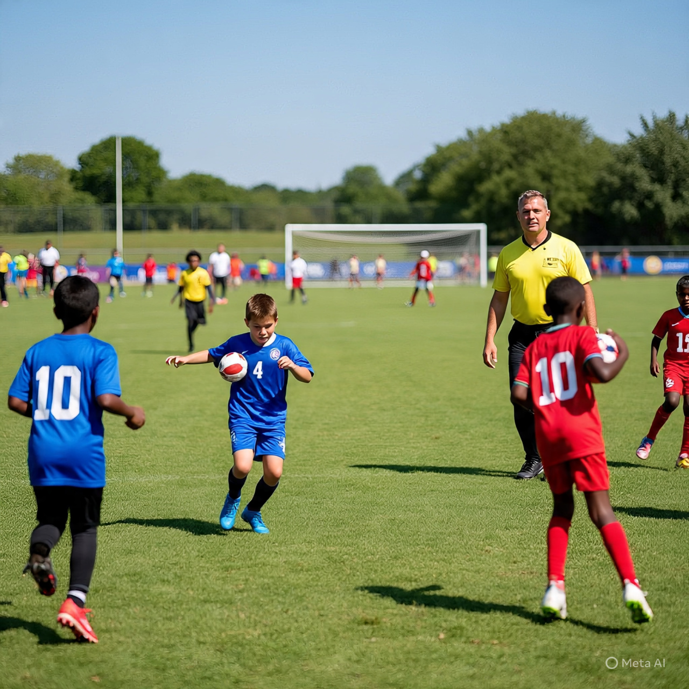

Clubs & Activities
We offer a vibrant range of clubs and activities that help our students discover and nurture their talents.
- Science Club
- Debate & Public Speaking
- Music Band & Choir
- Drama & Theatre
- Environmental Club
Sports & Arts
Our sports teams and art programs allow students to grow physically, creatively, and socially.
- Football, Basketball, Volleyball
- Athletics & Cross Country
- Visual Arts Workshops
- Dance & Cultural Performances
Student Achievements
We celebrate our learners' success in academics, sports, and community service.
- County Science Fair Champions
- Music Festival Awards
- Regional Debating Champions
- Volunteer Initiatives & Tree Planting Drives
Photos

